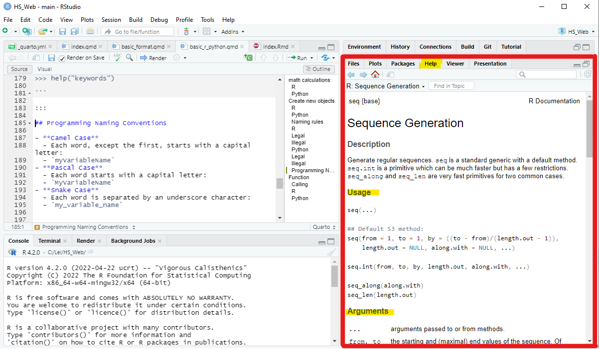

1 / 200 * 30[1] 0.15(59 + 73 - 2) / 3[1] 43.333333^2[1] 9sin(pi / 2) # pi as Const number in R[1] 1More Details of R in R for Data Science (2e) and Advanced R
More Details of Python in W3 School Python
This article serves as a brief introduction to the fundamental coding aspects of both R and Python. It provides a first impression of these scripting languages. For a more comprehensive understanding and in-depth techniques related to both languages, you are encouraged to explore the website mentioned above. The content here is primarily a condensed compilation of information from the provided links, aimed at facilitating a comparison between R and Python.
Data and Functions are the two essential components of every programming language, especially in the context of data science and data processing. They can be likened to nouns and verbs in natural languages. Data describes information, while Functions define actions for manipulating that data.
This article is divided into two main sections: Data (Section 1) and Coding (Section 2).
In the Data section, we will explore:
In the Coding section, we will delve into three key aspects:
The above five elements can be considered as the most fundamental elements of every scripting language. Additionally, we will explore object creation and naming in a section called ‘New Objects’ (Section 3). Objects can encompass functions and variables, further enriching our understanding of scripting.
This article will provide a solid introduction to the core concepts in programming, laying the groundwork for further exploration in both R and Python.
There are two primary tools of control flow: choices and loops.
if statements calls, allow you to run different code depending on the input.The basic form of an if statement in R is as follows:
If condition is TRUE, true_action is evaluated; if condition is FALSE, the optional false_action is evaluated.
Typically the actions are compound statements contained within {:
if returns a value so that you can assign the results:
Closely related to if is the switch()-statement. It’s a compact, special purpose equivalent that lets you replace code like:
with the more succinct:
x_option <- function(x) {
switch(x,
a = "option 1",
b = "option 2",
c = "option 3",
stop("Invalid `x` value")
)
}
x_option("b")[1] "option 2"The last component of a switch() should always throw an error, otherwise unmatched inputs will invisibly return NULL:
Given that if only works with a single TRUE or FALSE, you might wonder what to do if you have a vector of logical values. Handling vectors of values is the job of ifelse(): a vectorised function with test, yes, and no vectors (that will be recycled to the same length):
[1] "1" "2" "3" "4" "XXX" "6" "7" "8" "9" "XXX" [1] "odd" "even" "odd" "even" "odd" "even" "odd" "even" "odd" "even"Note that missing values will be propagated into the output.
I recommend using ifelse() only when the yes and no vectors are the same type as it is otherwise hard to predict the output type. See https://vctrs.r-lib.org/articles/stability.html#ifelse for additional discussion.
for-LoopsA for loop is used for iterating over a sequence (that is either a list, a tuple, a dictionary, a set, or a string). For each item in vector, perform_action is called once; updating the value of item each time.
while-LoopsWith the while loop we can execute a set of statements as long as a condition is TRUE:
More details of in Advanced R Chapter 6
A function is a block of code which only runs when it is called. It can be broken down into three components:
The formals(), the list of arguments that control how you call the function.
The body(), the code inside the function.
The environment(), the data structure that determines how the function finds the values associated with the names.
While the formals and body are specified explicitly when you create a function, the environment is specified implicitly, based on where you defined the function. This location could be within another package or within the workspace (global environment).
Calling Syntax:
Try using seq(), which makes regular sequences of numbers:
We often omit the names of the first several arguments in function calls, so we can rewrite this as follows:
We can also check the arguments and other information with:
The “help” windows shows as:

Use the function() keyword:
calling the function my_add1:
In R, the return statement is not essential for a function to yield a value as its result. By default, R will return the result of the last command within the function as its output.
_, and dot .TRUE FALSENULL Inf NaN NA NA_real NA_complex_ NA_character_if elsefor while repeatnext breakfunctionini_use_snake_case
otherPeopleUseCamelCase
some.people.use.periods
aFew.People_RENOUNCEconvention6
_start_with_underscores
1_start_with_number
if
contain sapce
contain-other+charater
more Reserved Words in:
__True FalseNoneif else eliffor while repeattry break continue finallydefin and or notreturni_use_snake_case
_start_with_underscores
otherPeopleUseCamelCase
aFew_People_RENOUNCEconvention6
want.contain.dot
1_start_with_number
if
contain sapce
contain-other+charater
More Keywords in:
myVariableNameMyVariableNamemy_variable_name